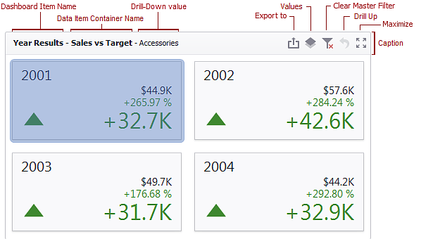
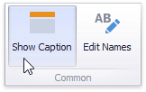
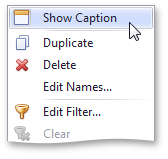

Dashboard Item Caption
Each dashboard item has a caption that is displayed at the top of the item. The caption contains static text along with other information, as well as command buttons.

To show or hide the caption of a dashboard item, click the Show Caption button in the Design Ribbon tab...

...or right-click the item when designing the dashboard, and click the Show Caption menu item.

Note
The caption of the Range Filter dashboard item is not visible by default.
The caption of the Dashboard item contains the following information and buttons, depending on the dashboard item type:
- Dashboard Item Name - represents the static text within a dashboard item's caption.
Data Item Container Name - represents the name of the data item container. To learn more about data item containers, see the Providing Data topic for the corresponding dashboard item.
You can change the default name of the dashboard item or data item container using the Edit Names dialog. To invoke this dialog, right-click the item when designing the dashboard, and click the Edit Names... menu item (alternatively, you can use the Edit Names button in the Design Ribbon tab).

- Drill-Down value - shows the value or values from the current drill-down hierarchy. To learn more, see the Drill-Down topic.
- Export to button - allows you to print or export a dashboard item. To learn how to print individual dashboard items, see the Printing and Exporting topic.
- Values button - invokes a drop-down menu that allows you to switch between the provided values (in the pie, card, gauge and map dashboard items). To learn more, see the Providing Data topic for the corresponding dashboard item.
- Clear Master Filter button - allows you to reset filtering when a dashboard item acts as the Master Filter. To learn more, see the Master Filtering topic in the Interactivity section for the corresponding dashboard item.
- Drill Up button - allows you to return to the previous detail level when the drill-down capability is enabled for this item. To learn more, see the Drill-Down topic in the Interactivity section for the corresponding dashboard item.
- Clear Selection button - allows you to clear the selection inside an item.
- Initial Extent button - restores the Map dashboard items' default size and position.
- Select Date Time Periods button / menu - allows you to select date-time periods for the Range Filter.
- Multiselection button - allows you to filter data by selecting multiple elements in dashboard items.
- Maximize button - expands any dashboard item into the whole dashboard size to examine data in greater detail. Refer to Dashboard Items Layout for more information.
- Restore button - restores the expanded item to its initial state.